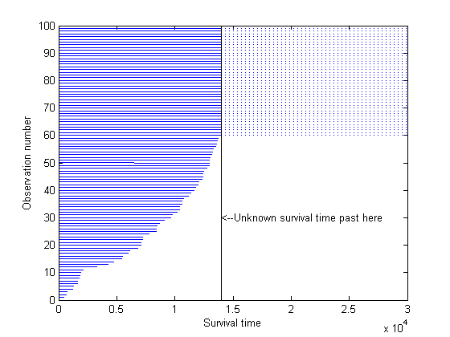
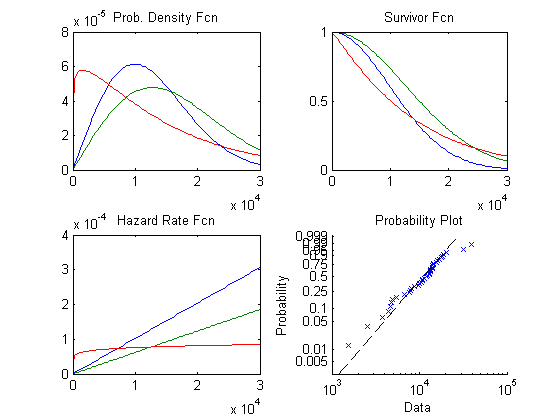
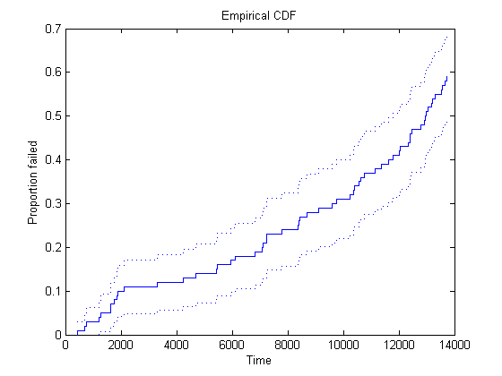
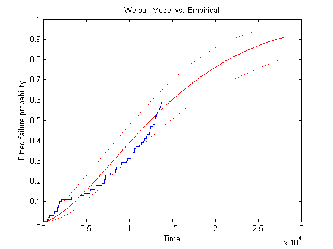
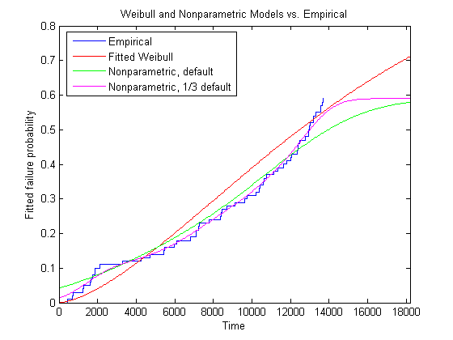
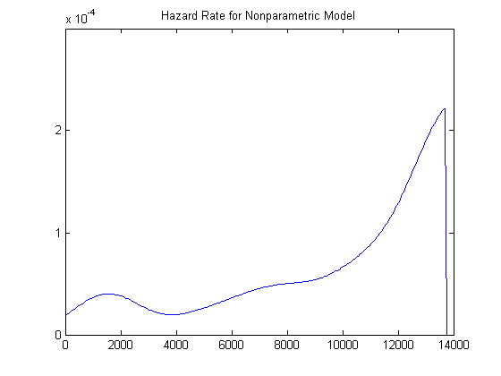

In this demo we consider the analysis of lifetime data. In biological or medical applications, this is known as survival analysis, and the times may represent the survival time of an organism or the time until a disease is cured. In engineering applications, this is known as reliability analysis, and the times may represent the time to failure of a piece of equipment.
To demonstrate how to use MATLAB and the Statistics Toolbox to analyze lifetime data, we'll look at an application in modeling the time to failure of a throttle from an automobile fuel injection system.
Some features of lifetime data distinguish them other types of data. First, the lifetimes are always positive values, usually representing time. Second, some lifetimes may not be observed exactly, so that they are known only to be larger than some value. Third, the distributions and analysis techniques that are commonly used are fairly specific to lifetime data
Let's simulate the results of testing 100 throttles until failure. We'll generate data that might be observed if most throttles had a fairly long lifetime, but a small percentage tended to fail very early.
rand('state',1);
lifetime = [wblrnd(15000,3,90,1); wblrnd(1500,3,10,1)];
In this example, assume that we are testing the throttles under stressful conditions, so that each hour of testing is equivalent to 100 hours of actual use in the field. For pragmatic reasons, it's often the case that reliability tests are stopped after a fixed amount of time. For this example, we will use 140 hours, equivalent to a total of 14,000 hours of real service. Some items fail during the test, while others survive the entire 140 hours. In a real test, the times for the latter would be recorded as 14,000, and we mimic this in the simulated data. It is also common practice to sort the failure times.
T = 14000; obstime = sort(min(T, lifetime));
We know that any throttles that survive the test will fail eventually, but the test is not long enough to observe their actual time to failure. Their lifetimes are only known to be greater than 14,000 hours. These values are said to be censored. This plot shows that about 40% of our data are censored at 14,000.
failed = obstime(obstime<T); nfailed = length(failed); survived = obstime(obstime==T); nsurvived = length(survived); censored = (obstime >= T); plot([zeros(size(obstime)),obstime]', repmat(1:length(obstime),2,1), ... 'Color','b','LineStyle','-') line([T;3e4], repmat(nfailed+(1:nsurvived), 2, 1), 'Color','b','LineStyle',':'); line([T;T], [0;nfailed+nsurvived],'Color','k','LineStyle','-') text(T,30,'<--Unknown survival time past here') xlabel('Survival time'); ylabel('Observation number')
Before we examine the distribution of the data, let's consider different ways of looking at a probability distribution.
Here are examples of those four plot types, using the Weibull distribution to illustrate. The Weibull is a common distribution for modeling lifetime data.
x = linspace(1,30000); subplot(2,2,1); plot(x,wblpdf(x,14000,2),x,wblpdf(x,18000,2),x,wblpdf(x,14000,1.1)) title('Prob. Density Fcn') subplot(2,2,2); plot(x,1-wblcdf(x,14000,2),x,1-wblcdf(x,18000,2),x,1-wblcdf(x,14000,1.1)) title('Survivor Fcn') subplot(2,2,3); wblhaz = @(x,a,b) (wblpdf(x,a,b) ./ (1-wblcdf(x,a,b))); plot(x,wblhaz(x,14000,2),x,wblhaz(x,18000,2),x,wblhaz(x,14000,1.1)) title('Hazard Rate Fcn') subplot(2,2,4); probplot('weibull',wblrnd(14000,2,40,1)) title('Probability Plot')
The Weibull distribution is a generalization of the exponential distribution. If lifetimes follow an exponential distribution, then they have a constand hazard rate. This means that they do not age, in the sense that the probability of observing a failure in an interval, given survival to the start of that interval, doesn't depend on where the interval starts. A Weibull distribution has a hazard rate that may increase or decrease.
Other distributions used for modeling lifetime data include the lognormal, gamma, and Burnbaum-Saunders distributions.
We will plot the empirical cumulative distribution function of our data, showing the proportion failing up to each possible survival time. The dotted curves give 95% confidence intervals for these probabilities.
subplot(1,1,1); [empF,x,empFlo,empFup] = ecdf(obstime,'censoring',censored); stairs(x,empF); hold on; stairs(x,empFlo,':'); stairs(x,empFup,':'); hold off xlabel('Time'); ylabel('Proportion failed'); title('Empirical CDF')
This plot shows, for instance, that the proportion failing by time 4,000 is about 12%, and a 95% confidence bound for the probability of failure by this time is from 6% to 18%. Notice that because our test only ran 14,000 hours, the empirical CDF only allows us to compute failure probabilities out to that limit. About 40% of the data were censored at 14,000, and so the empirical CDF only rises to about 0.60, instead of 1.0.
The Weibull distribution is often a good model for equipment failure. The function WBLFIT fits the Weibull distribution to data, including data with censoring. After computing parameter estimates, we'll evaluate the CDF for the fitted Weibull, using those estimates. Because the CDF values are based on estimated parameters, we'll compute confidence bounds for them.
paramEsts = wblfit(obstime,'censoring',censored);
[nlogl,paramCov] = wbllike(paramEsts,obstime,censored);
xx = linspace(1,2*T,500);
[wblF,wblFlo,wblFup] = wblcdf(xx,paramEsts(1),paramEsts(2),paramCov);
We can superimpose plots of the empirical CDF and the fitted CDF, to judge how well the Weibull distribution models the throttle reliability data.
stairs(x,empF); hold on handles = plot(xx,wblF,'r-',xx,wblFlo,'r:',xx,wblFup,'r:'); hold off xlabel('Time'); ylabel('Fitted failure probability'); title('Weibull Model vs. Empirical')
Notice that the Weibull model allows us to project out and compute failure probabilities for times beyond the end of the test. However, it appears the fitted curve does not match our data well. We have too many early failures before time 2,000 compared with what the Weibull model would predict, and as a result, too few for times between about 7,000 and about 13,000. This is not surprising -- recall that we generated data with just this sort of behavior.
The pre-defined functions provided with the Statistics Toolbox don't include any distributions that have an excess of early failures like this. Instead, we might want to draw a smooth, nonparametric curve through the empirical CDF, using the function KSDENSITY. We'll remove the confidence bands for the Weibull CDF, and add two curves, one with the default smoothing parameter, and one with a smoothing parameter 1/3 the default value. The smaller smoothing parameter makes the curve follow the data more closely.
delete(handles(2:end)) [npF,ignore,u] = ksdensity(obstime,xx,'cens',censored,'function','cdf'); line(xx,npF,'Color','g'); npF3 = ksdensity(obstime,xx,'cens',censored,'function','cdf','width',u/3); line(xx,npF3,'Color','m'); xlim([0 1.3*T]) title('Weibull and Nonparametric Models vs. Empirical') legend('Empirical','Fitted Weibull','Nonparametric, default','Nonparametric, 1/3 default', ... 'location','northwest');
The nonparametric estimate with the smaller smoothing parameter matches the data well. However, just as for the empirical CDF, it is not possible to extrapolate the nonparametric model beyond the end of the test -- the estimated CDF levels off above the last observation.
Let's compute the hazard rate for this nonparametric fit and plot it over the range of the data.
hazrate = ksdensity(obstime,xx,'cens',censored,'width',u/3) ./ (1-npF3); plot(xx,hazrate) title('Hazard Rate for Nonparametric Model') xlim([0 T])
This curve has a bit of a "bathtub" shape, with a hazard rate that is high near 2,000, drops to lower values, then rises again. This is typical of the hazard rate for a component that is more susceptible to failure early in its life (infant mortality), and again later in its life (aging).
Also notice that the hazard rate cannot be estimated above the largest uncensored observation for the nonparametric model, and the graph drops to zero.
For the simulated data we've used for this example, we found that a Weibull distribution was not a suitable fit. We were able to fit the data well with a nonparametric fit, but that model was only useful within the range of the data.
One alternative would be to use a different parametric distribution. The Statistics Toolbox has includes functions for other common lifetime distributions such as the lognormal, gamma, and Burbaum-Saunders, as well as many other distributions that are not commonly used in lifetime models. You can also define and fit custom parametric models to lifetime data, as described in the Fitting Custom Univariate Distributions, Part 2 demo.
Another alternative would be to use a mixture of two parametric distributions -- one representing early failure and the other representing the rest of the distribution. Fitting mixtures of distributions is described in the Fitting Custom Univariate Distributions demo.